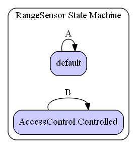

This file is part of the OpenJAUS HTML JAUS Reference.
Please support AS-4 JAUS and SAE by purchasing the corresponding Standard Document(s) from SAE International here.
|
This file is part of the OpenJAUS HTML JAUS Reference. |
||||||||||||||||||||||||||||||||||||||||||||||||||||||||||||||||||||||||||||||||||||||||||||||||||
| Home / Environment_v1_0ServiceSet / RangeSensor | |||||||||||||||||||||||||||||||||||||||||||||||||||||||||||||||||||||||||||||||||||||||||||||||||||
| Inherits From: | ||||||||||||||||||||||||||||||||||||||||||||||||||||||||||||||||||||||||||||||||||||||||||||||||||||||
 urn:jaus:jss:core:AccessControl v1.1 urn:jaus:jss:core:AccessControl v1.1
|
||||||||||||||||||||||||||||||||||||||||||||||||||||||||||||||||||||||||||||||||||||||||||||||||||||||
|
urn:jaus:jss:core:Events v1.1
|
||||||||||||||||||||||||||||||||||||||||||||||||||||||||||||||||||||||||||||||||||||||||||||||||||||||
|
urn:jaus:jss:core:Transport v1.0
|
||||||||||||||||||||||||||||||||||||||||||||||||||||||||||||||||||||||||||||||||||||||||||||||||||||||
| Internal Event Set | None |
|---|
| Message Set | |
|---|---|
| Message ID | Name |
2801h |
QueryRangeSensorCapabilities |
2804h |
QueryRangeSensorCompressedData |
2802h |
QueryRangeSensorConfiguration |
2803h |
QueryRangeSensorData |
2805h |
QuerySensorGeometricProperties |
4801h |
ReportRangeSensorCapabilities |
4804h |
ReportRangeSensorCompressedData |
4802h |
ReportRangeSensorConfiguration |
4803h |
ReportRangeSensorData |
4805h |
ReportRangeSensorGeometricProperties |
0802h |
SetRangeSensorConfiguration |

| State Transitions | |||||||||||||||||||||||||||||||||||||||||||||||||||||||||||||||||||||||||||||||||||||||||||||||||||
|---|---|---|---|---|---|---|---|---|---|---|---|---|---|---|---|---|---|---|---|---|---|---|---|---|---|---|---|---|---|---|---|---|---|---|---|---|---|---|---|---|---|---|---|---|---|---|---|---|---|---|---|---|---|---|---|---|---|---|---|---|---|---|---|---|---|---|---|---|---|---|---|---|---|---|---|---|---|---|---|---|---|---|---|---|---|---|---|---|---|---|---|---|---|---|---|---|---|---|---|
| Label | Transition | Trigger | Conditional | Actions | |||||||||||||||||||||||||||||||||||||||||||||||||||||||||||||||||||||||||||||||||||||||||||||||
| B | RangeSensorControlledLoop | SetRangeSensorConfiguration | isControllingClient |
sendConfirmSensorConfiguration , updateRangeSensorConfiguration | |||||||||||||||||||||||||||||||||||||||||||||||||||||||||||||||||||||||||||||||||||||||||||||||
| A | RangeSensorDefaultLoop | QueryRangeSensorCapabilities | |
sendReportRangeSensorCapabilities | |||||||||||||||||||||||||||||||||||||||||||||||||||||||||||||||||||||||||||||||||||||||||||||||
| QueryRangeSensorConfiguration | |
sendReportRangeSensorConfiguration | |||||||||||||||||||||||||||||||||||||||||||||||||||||||||||||||||||||||||||||||||||||||||||||||||
| QuerySensorGeometricProperties | |
sendReportRangeSensorGeometricProperties | |||||||||||||||||||||||||||||||||||||||||||||||||||||||||||||||||||||||||||||||||||||||||||||||||
| QueryRangeSensorData | isCoordinateTransformSupported |
sendReportRangeSensorData | |||||||||||||||||||||||||||||||||||||||||||||||||||||||||||||||||||||||||||||||||||||||||||||||||
| QueryRangeSensorData | !isCoordinateTransformSupported |
sendReportRangeSensorDataInNativeSystem | |||||||||||||||||||||||||||||||||||||||||||||||||||||||||||||||||||||||||||||||||||||||||||||||||
| QueryRangeSensorCompressedData | isCoordinateTransformSupported |
sendReportRangeSensorCompressedData | |||||||||||||||||||||||||||||||||||||||||||||||||||||||||||||||||||||||||||||||||||||||||||||||||
| QueryRangeSensorCompressedData | !isCoordinateTransformSupported |
sendReportRangeSensorCompressedDataInNativeSystem | |||||||||||||||||||||||||||||||||||||||||||||||||||||||||||||||||||||||||||||||||||||||||||||||||
| Actions | |||
|---|---|---|---|
| Action Name | Type | Description | |
| sendConfirmSensorConfiguration | Send Action | Send ConfirmSensorConfiguration message to the component
Output Message: ConfirmSensorConfiguration |
|
| sendReportRangeSensorCapabilities | Send Action | Send a Report Range Sensor Capabilities message
Output Message: ReportRangeSensorCapabilities |
|
| sendReportRangeSensorCompressedData | Send Action | Send a ReportRangeSensorCompressedData message in native coordinate system
Output Message: ReportRangeSensorCompressedData |
|
| sendReportRangeSensorCompressedDataInNativeSystem | Send Action | Send a ReportRangeSensorCompressedData message using the requested coordinate system
Output Message: ReportRangeSensorCompressedData |
|
| sendReportRangeSensorConfiguration | Send Action | Send a ReportRangeSensorConfiguration message
Output Message: ReportRangeSensorConfiguration |
|
| sendReportRangeSensorData | Send Action | Send a ReportRangeSensorData message in native coordinate system
Output Message: ReportRangeSensorData |
|
| sendReportRangeSensorDataInNativeSystem | Send Action | Send a ReportRangeSensorData message in the native coordinate system
Output Message: ReportRangeSensorData |
|
| sendReportRangeSensorGeometricProperties | Send Action | Send a ReportRangeSensorGeometricProperties message
Output Message: ReportRangeSensorGeometricProperties |
|
| updateRangeSensorConfiguration | Update the sensor user controllable configuration parameters according to the ones specified. | ||
|
Copyright © SAE International. Reprinted with Permission. | ||||||||||||||||||||||||||||||||||||||||||||||||||||||||||||||||||||||||||||||||||||||||||||||||||
| Generated on 07/17/2019 from as6060-environment.ojss | |||||||||||||||||||||||||||||||||||||||||||||||||||||||||||||||||||||||||||||||||||||||||||||||||||